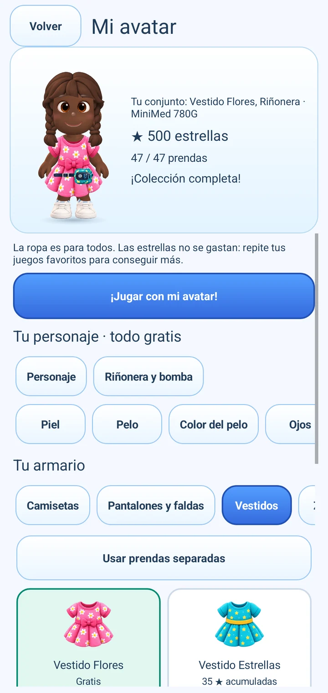
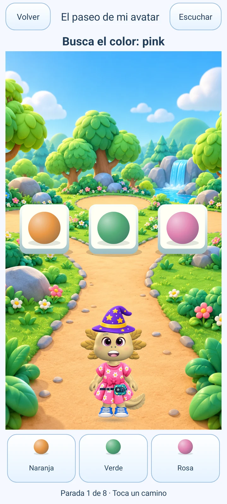
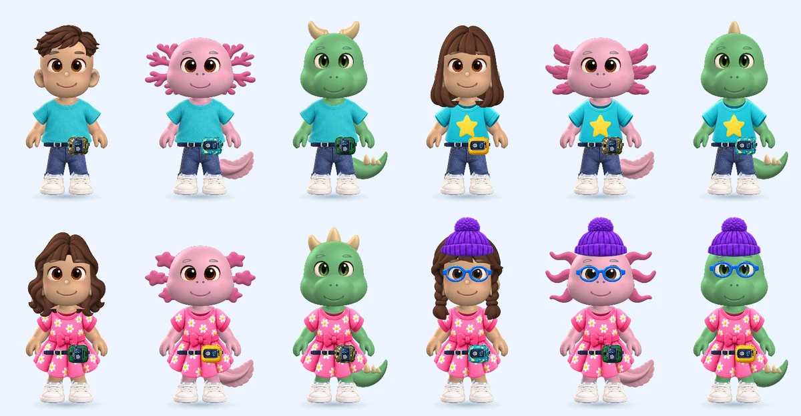
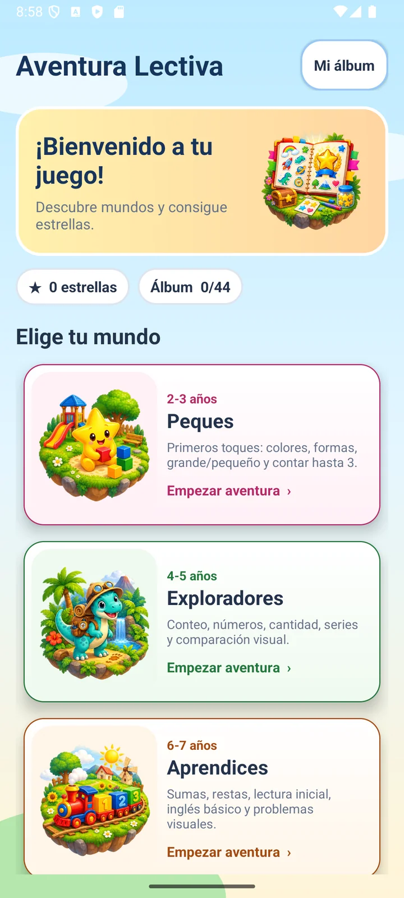
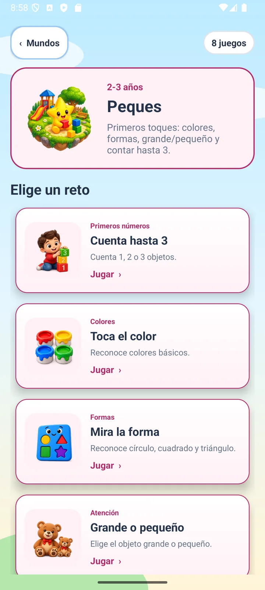
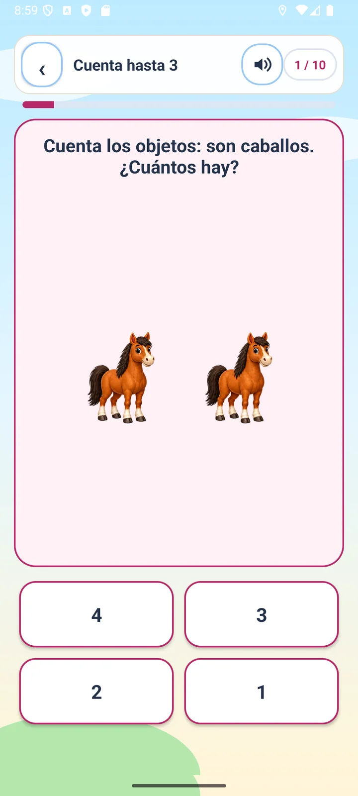

Peques
Primeras palabras, sonidos de animales, colores, formas, emociones y conteo hasta tres.
Cada descubrimiento cuenta. Un juego para crecer entre palabras, números, colores y preguntas, con una experiencia que las familias pueden adaptar.
Ya disponible en Google Play · Android
 LA CURIOSIDAD ES EL PUNTO DE PARTIDA
LA CURIOSIDAD ES EL PUNTO DE PARTIDAUN RECORRIDO QUE CRECE CON ELLOS
Las edades orientan el contenido. Puedes acompañar al niño y elegir el mundo que mejor encaje con su momento de aprendizaje.
Primeras palabras, sonidos de animales, colores, formas, emociones y conteo hasta tres.
Sonidos iniciales, sílabas, rimas, vocales, números, series y comparación de cantidades.
Lectura, cuentos, sumas y restas; inglés de animales, alimentos, colores y cuerpo.
Comprensión, ortografía, sinónimos, multiplicaciones, fracciones, memoria y frases en inglés.
Conversaciones y relatos en inglés, tildes, problemas, geometría, ciencias y geografía.
UN ESPACIO CREATIVO · TODAS LAS EDADES
«Pinta y colorea» reúne 16 dibujos en un taller para todas las edades. Elige una lámina, acerca los detalles y pinta por zonas. Puedes deshacer y continuar después: el dibujo se guarda localmente.
Crear por el placer de crear.El taller actual no tiene respuestas correctas, rondas, puntos ni pegatinas.
MI AVATAR · NUEVO EN AVENTURA LECTIVA 1.0.0
Persona, ajolote o dinosaurio: elige tu personaje y dale tu estilo. Después, llévalo a explorar un bosque con pequeños retos y teletransportación.

Tres personajes gratuitos, colores, rasgos, peinados y un armario de 47 prendas y accesorios. La ropa es para todos.

El conjunto que has elegido te acompaña durante ocho paradas. Sin cuenta atrás, vidas ni penalización por reintentar.
Las respuestas correctas de tus juegos suman estrellas acumuladas. El armario abre nuevas prendas automáticamente y vestirte no consume estrellas. Puedes repetir actividades de tu edad para avanzar; la colección completa se alcanza con 500.
El personaje, sus rasgos y varias prendas iniciales son gratuitos. La riñonera inclusiva y sus variantes también son gratuitas; es un accesorio decorativo, sin funciones ni registros médicos.
Desde Inicio, pulsa «Mi avatar». Elige personaje, rasgos y ropa; los cambios se guardan automáticamente. Pulsa «¡Jugar con mi avatar!» y selecciona una de las tres modalidades.
Completar un paseo suma ocho estrellas una sola vez por sesión completada. Puedes empezar otro paseo para seguir jugando. No se necesitan compras ni anuncios para conseguir ropa.
Identifica colores y formas y cuenta entre una y cuatro manzanas. Cada acierto te lleva a la siguiente parada.
Reconoce letras y palabras iniciales con tu avatar. Si necesitas volver a intentarlo, puedes hacerlo sin perder vidas.
Practica seis colores con la voz inglesa incluida. Este modo es opcional: los más pequeños pueden elegir otro camino.

UN VISTAZO AL JUEGO
Pulsa para ampliar o desliza en móvil. Estas capturas ilustran el recorrido de juego; el catálogo y la apariencia pueden variar entre versiones.

Una puerta de entrada a actividades adecuadas a cada etapa.

Palabras, números y retos con identidad propia.

Cuatro opciones, respuesta visual y voces para acompañar.
PEQUEÑO MANUAL
El nombre o apodo es opcional. Puedes jugar sin una cuenta propia y el progreso se guarda en el dispositivo.
En Inicio, elige el mundo por edad. Abre la actividad que quieras practicar. También puedes acceder al álbum o al taller creativo.
Cada sesión de preguntas tiene diez retos y cuatro opciones. Si la familia lo permite y el dispositivo es compatible, pulsa el micrófono para hablar y confirma la opción reconocida antes de enviarla.
Cada acierto suma una estrella. Terminar sin agotar los intentos desbloquea o mejora una pegatina. Peques y Exploradores permiten corregir un primer fallo; desde Aprendices se avanza tras el primero.
En comprensión lectora, lee el relato que acompaña a la sesión. El botón del libro te permite consultarlo mientras respondes las diez preguntas relacionadas con ese texto.
Pulsa «Mi avatar» en Inicio, escoge persona, ajolote o dinosaurio y cambia sus rasgos y prendas. El conjunto se guarda solo. Entra en «¡Jugar con mi avatar!» y elige colores/formas/cantidades, letras o inglés. Cada paseo tiene ocho paradas, reintentos libres y ocho estrellas al completarlo.
En «Pinta y colorea», elige uno de los 16 dibujos, selecciona un color y pinta las zonas. Acerca la imagen para los detalles y utiliza deshacer. Tu trabajo queda guardado para retomarlo.
ZONA DE FAMILIAS
Opciones reales para adaptar la experiencia. Voz, sonidos, animaciones y micrófono: cada familia elige.
El acceso a Familias pide escribir con cifras un código de cuatro dígitos presentado en palabras. Es una barrera para el acceso infantil accidental.
Desde ahí puedes cambiar o borrar el nombre local, consultar el progreso por mundo, gestionar las opciones y acceder a la compra sin anuncios.
Activa o desactiva la narración. Las voces española e inglesa están incluidas y sintetizan localmente.
Decide si se leen las cuatro opciones en Peques y Exploradores, para acompañar a los prelectores.
Solo escucha al pulsar el micrófono y tras conceder permiso. Requiere reconocimiento local compatible; algunos juegos de ortografía usan botones.
Son dos controles independientes. Puedes quitar los sonidos, animaciones y confeti; los paseos del avatar también respetan estas opciones.
Cambia o borra el apodo, y consulta los retos completados por mundo. El taller creativo no tiene evaluación.
La versión de producción 1.0.0 no las tiene habilitadas. En betas compatibles son opcionales. El aspecto del avatar y los accesorios no se envían a analítica.
Este panel explica los ajustes de la app. Los cambios se realizan dentro de Aventura Lectiva.
Una compra única opcional elimina la publicidad. No es una suscripción ni desbloquea materias. El precio se consulta antes de confirmar en Google Play; puedes restaurar la compra con la misma cuenta.
Puede aparecer un anuncio de entrada a un minijuego, con un límite global de uno cada dos minutos. Se solicitan anuncios no personalizados y aptos para público infantil. El banner solo aparece en la selección de mundos, separado de los controles. No hay anuncios dentro de las actividades, del avatar ni de sus paseos, ni anuncios obligatorios para ganar pegatinas o ropa.
LA AVENTURA SIGUE CRECIENDO
PRIVACIDAD EN FAMILIA
Apodo, dibujos y progreso son locales. La publicidad y las estadísticas opcionales tienen tratamientos distintos, explicados en la información de privacidad.
Leer la información de privacidadIndica «Aventura Lectiva», la versión, el mundo y el modelo de dispositivo.